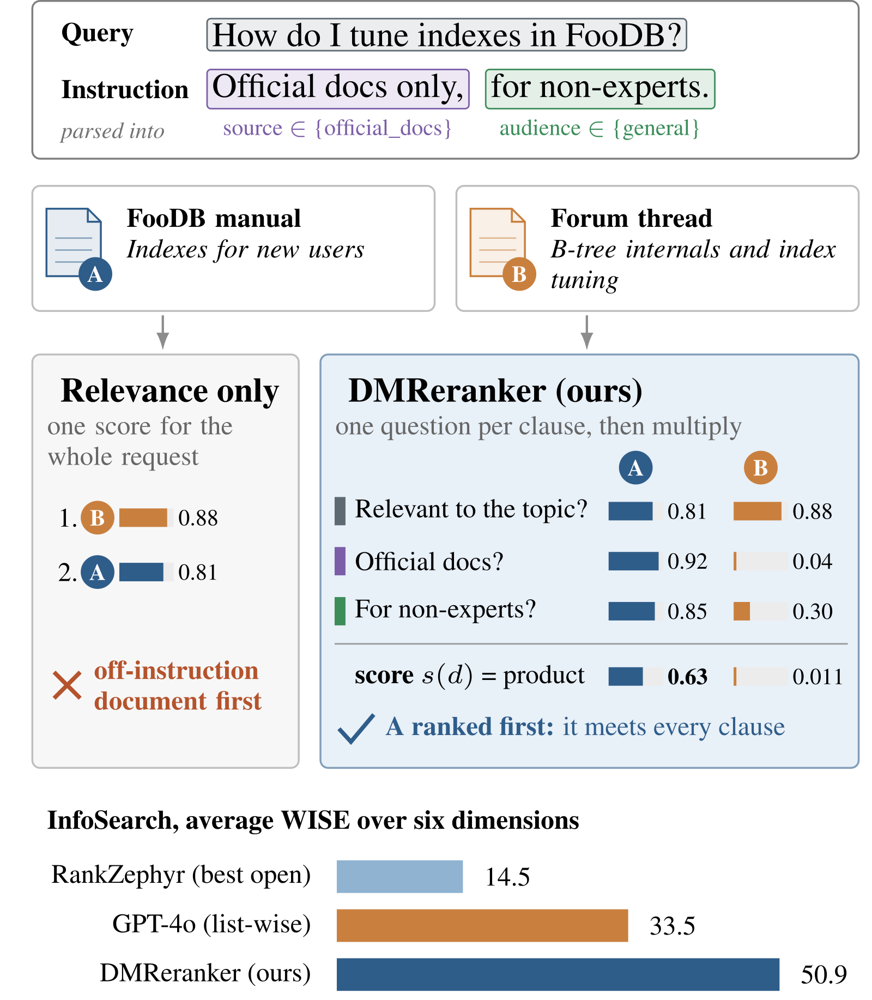
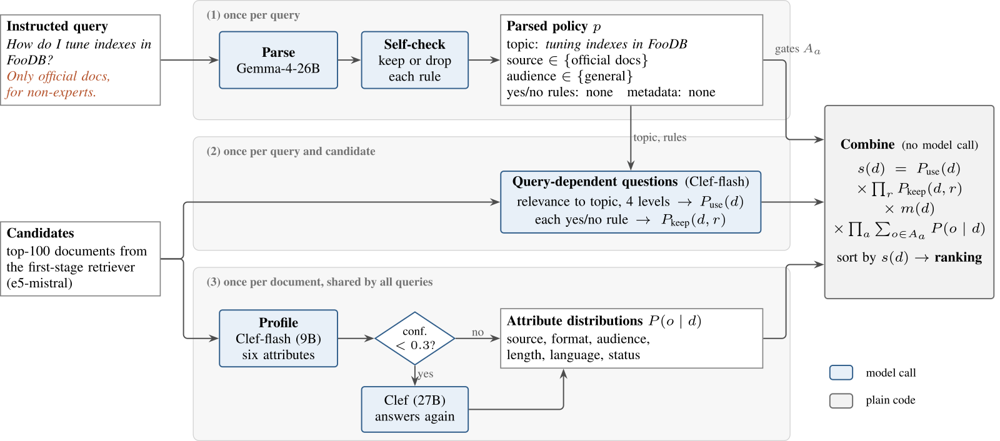

目录 · 11 节
1它到底在解决什么问题2整体流程：解析一次，画像一次，再逐条提问3第一步：把要求拆成条件4第二步：每篇候选回答几道窄问题5第三步：概率相乘6实验：分数比 GPT-4o 高在哪7是拆题带来的提升，还是判断模型本身强8为什么另一个指标 SICR 反而低9我认为它的局限10一个推荐或搜索团队可以怎么试11评价搜索重排可以不训练任何参数，就照顾到用户写在 query 后面的要求，比如要写给新手的、要某种语言的、只要官方来源。DMReranker 的做法是把带要求的 query 拆成主题和几条具体条件，让一个小模型对每条条件只回答一个窄问题，再把各题判定满足的概率乘起来当总分。多数重排模型只学过判断主题相关，把这些要求当成几个多余的词。InfoSearch 基准用 WISE（指令敏感度分）来测这件事：同一条 query 分别不加要求、加上要求、加相反要求各排一次，看符合条件的文档有没有在加要求时往前挪、在相反要求时往后挪。挪对方向得分，挪错方向扣分，前几名的变化算得更重，所以分数可以是负的。用 GPT-4o 做重排，WISE 平均只有 33.5，最强的开源重排模型只有 14.5，DMReranker 达到 50.9。哪一条要求明显不满足，总分就会被压得很低，文档自然掉出前排。
做搜索重排的人值得读这篇，因为它给出了一个很便宜、可拆解的办法。核心思想一句话：一个模型先把要求拆成条件，另一个小模型对每篇候选逐条回答“满足吗”，最后用普通代码把概率相乘。用同一个小模型对比，拆成小题问比只问一道总题，WISE 从 32.9 提到 47.6。带要求时它的 nDCG@10 是 78.3，高于 GPT-4o 的 74.2，说明乘上的条件项没有拖累相关度。
它到底在解决什么问题
先看论文图 1 里的例子。用户问“FooDB 怎么调索引”，后面加了一句“只要官方文档，写给非专家看的”。候选里有两篇：A 是 FooDB 官方手册里给新用户的索引章节，B 是论坛上讨论 B-tree 内部实现和索引调优的帖子。
| 示意（数字来自论文图 1，论文也标明是示意） | 文档 A：官方手册 | 文档 B：论坛帖 |
|---|---|---|
| 和主题相关吗 | 0.81 | 0.88 |
| 是官方文档吗 | 0.92 | 0.04 |
| 写给非专家吗 | 0.85 | 0.30 |
| 三项相乘 | 0.63 | 0.011 |
只看主题相关度，B 比 A 稍高，排在第一。可用户已经说了不要论坛帖、不要写给专家的内容。DMReranker 把三项概率相乘，B 在“官方文档”这一项上只有 0.04，乘完只剩 0.011，A 就排到了前面。

InfoSearch 是这篇用来测试的基准。它有六类条件：读者对象、关键词、格式、语言、长度、来源。每条 query 有三种问法：不带要求的原始版、加上要求的版本、要求相反的版本（例如“只要论坛帖”）。评测时用同一批人工标注，看排序有没有朝要求的方向变。这些标注只在打分时使用，重排模型在排序时看不到。
整体流程：解析一次，画像一次，再逐条提问

整个流程如下，只有最后的合并不调用模型：
| 步骤 | 输入 | 做什么 | 产出 |
|---|---|---|---|
| 解析要求 | 带要求的 query | Gemma-4-26B 输出 JSON，再自查一遍 | 主题句和几条规则 |
| 文档画像 | 每篇候选（和 query 无关） | 小模型 Clef-flash 给六个属性各出一个概率分布，每篇只做一次 | 每篇文档的属性分布 |
| 逐条提问 | 主题、规则、每篇候选 | Clef-flash 回答相关度和每条是否题 | 每题一个概率 |
| 合并 | 所有概率 | 普通代码相乘 | 每篇候选的总分 |
候选来自 e5-mistral 检索出的前 100 篇，和 InfoSearch 公布的基线用的是同一批。所以表格里的提升来自重排方式，和召回无关。
第一步：把要求拆成条件
解析模型读入 query，输出四样东西。第一是主题句，即去掉所有要求后的信息需求，例子里就是“FooDB 怎么调索引”。第二是属性规则，把文档的某个属性限定在允许的取值里，例如“来源只能是官方文档”。第三是其他规则，每条是一个关于文档的是否题，例如“文档有没有提到 FooDB 3”，并注明答“是”还是答“否”才保留。第四是时间和版本规则，例如“2023 年以后发布”。
为什么还要自查一遍？同一个模型再看一次 query 和解析结果，对每条规则投票保留或删掉。它只能删规则、改写主题，不能加规则。作者的理由是：多编出一条规则，可能把唯一相关的文档挤出前十；漏掉一条规则，结果最多退回到普通相关度重排的水平。多编规则比漏掉规则代价大得多，所以自查只许删、不许加。
第二步：每篇候选回答几道窄问题
回答问题的是 Clef-flash，一个 9B 的判断模型。它不接受自由提示，只接收文档和几道有类型的题目，对每个选项返回概率。题型有三种：是否题、多选一、按等级打分。
第一类题是文档画像，就是给每篇文档预先填好六个属性：来源、格式、读者对象、长度、语言、状态（是否已过时）。每个属性有固定的选项，比如来源分官方文档、博客、论坛问答、新闻、学术、其他。模型对每个属性给出一个概率分布，另外还单独返回一个置信度值，表示它对这个答案有多确定。这些题不涉及 query，所以每篇文档只画像一次，结果给所有 query 共用。规则用到的某个属性如果置信度低于 0.3，就换 27B 的 Clef 重答，只替换这些低置信度的属性。
第二类题是相关度。模型按 0 到 3 四档判断文档在多大程度上回答了主题句，取“至少 2 档”的概率作为相关分。这里问的是去掉要求的主题句，而不是原始 query。如果相关度题里也出现“写给非专家”，模型可能把这个条件算进相关度里，条件就被算了两次。
第三类题是其他规则，以及日期、版本规则，每条一道是否题，取保留方向那个答案的概率。“最新优先”这类规则不一样：判断模型把两篇候选各截前 80 个词放在一起，问哪篇更新，正反顺序各问一次取平均。这样对每篇其他候选 e，都得到一个“e 比 d 更新”的概率。把它乘上 e 的相关分，就是“e 既有用、又比 d 更新”的概率，再用 1 减去这个值。把所有其他候选的这个值乘起来，就是 d 的时间分，意思是没有任何一篇有用的候选比它更新。 Hoot 说

- e1 又新又有用，留下的只有 0.28，几乎是它一个把 d 的时间分压下去的。
- e2 虽然也新，但相关分只有 0.1，留下 0.92，几乎不影响 d。
- 为什么要乘相关分：不乘的话 d 只剩 0.04，一篇跑题的新文档也能把好文档挤下去。
示意：只画两个对手，两者比 d 新的概率都设为 0.8，相关分分别是 0.9 和 0.1，数字全是编的。右下角对照：如果不乘相关分，无关的新文档也会把 d 压得很低。 出处: 论文 §3 的“最新优先”规则：两两问谁更新、正反各问一次取平均，乘对手的相关分后取 1 减，再跨候选连乘；数字全部为示意。
第三步：概率相乘
总分写成公式是：
是文档 的相关分。 是它通过是否题规则 的概率。 是日期、版本规则和“最新优先”各项的乘积，多数 query 没有这类规则，取 1。 是画像在规则 允许的选项上的概率之和。
直觉是：把各条要求当作必须同时满足的独立条件，总分就是“文档有用并且满足全部要求”的概率。公式里没有权重、阈值或学出来的参数。一条要求明显不满足，对应那一项接近 0，文档就掉出前排。全部满足时，总分接近相关分本身。
举一个能心算的例子（示意）。要求是“只要英文”，画像给一篇文档的语言分布是英文 0.6、中文 0.3、其他 0.1，允许的选项只有英文，这一项就是 0.6。如果规则允许英文和中文，这一项变成 0.9。不确定的属性只会把分数压低一些，不会把文档直接删掉。
每道题、每个答案分布和每一项都写进日志。因为合并只是乘法，事后去掉某一项、重新排序，不用再调用模型。下面的消融就是这样算出来的。
实验：分数比 GPT-4o 高在哪
InfoSearch 有 600 条核心 query，公开版本共 1,597 条带要求的 query。所有重排器都对同一批前 100 篇候选重排，基线数字直接引自 InfoSearch 论文，作者没有重跑。表里除了 WISE，还有 SICR（严格遵从率，要求符合条件的文档自身分数跟着要求升降）。
| 指标（六类平均） | RankZephyr | GPT-4o（list-wise） | DMReranker |
|---|---|---|---|
| WISE | 14.5 | 33.5 | 50.9 |
| SICR | 10.5 | 32.1 | 19.2 |
| nDCG@10 原始版 | 75.0 | 83.8 | 82.9 |
| nDCG@10 带要求版 | 63.5 | 74.2 | 78.3 |
六类条件里，DMReranker 的 WISE 有四类领先 GPT-4o，都是“文档是什么样的”这类条件。读者对象一项是 52.1 对 7.4，长度 37.9 对 10.2，格式和来源也明显领先。GPT-4o 在读者对象上只有 7.4，说明重排模型几乎不对这类条件做出反应，而画像题直接问的就是这些属性。关键词和语言两项 GPT-4o 领先，分别是 63.0 对 58.3、53.1 对 46.7。这两类条件读一遍正文就能判断，而且 GPT-4o 每次在 20 篇候选的窗口里一起比较。
没有要求时，解析模型不会加任何规则，系统就只剩相关分。这时 nDCG@10 是 82.9，和 GPT-4o 的 83.8 接近，说明问去掉要求的主题句、按四档打分，本身就是一个不弱的相关度重排。
是拆题带来的提升，还是判断模型本身强
为了回答这个问题，作者用同一个 Clef-flash 做了一个单题基线：对每篇候选只问一道是否题，“这篇文档对这个带要求的 query 有用吗”，用答“是”的概率排序。在固定随机抽出的 300 条 query 上配对比较，拆题把 WISE 从 32.9 提到 47.6。这 14.7 分提升的 95% 置信区间是 7.3 到 22.2，不含 0。这说明在同一个判断模型上，拆题本身就带来了提升。分开看，提升集中在读者对象和格式两类，其余几类在误差范围内，来源一类单题基线还领先 10.5 分。每类只有 50 条 query，所以作者只把平均差当主要结论。
消融也指向同一个结论。只保留相关分时，WISE 掉到 -4.0。去掉属性规则后，读者对象、语言、来源三项都掉到 0 附近或以下，关键词不变。去掉是否题规则后，关键词从 58.3 掉到 4.1。原因是解析模型把“必须包含某词”留在主题句里，把“不能包含某词”转成了是否题。格式和长度两类两种规则都用，去掉哪一种都会掉分。属性规则管文档是什么样的，是否题管文档里写了什么。
为什么另一个指标 SICR 反而低
SICR 的标准比 WISE 严格，它要求符合条件的那篇文档在加上要求后自身分数上升，在相反要求下下降。DMReranker 每一项都在 0 到 1 之间，多乘一项只会让分数变小。所以符合条件的文档自身分数很难上升，它排得更靠前，是因为别的文档被压下去了。语言一项 200 条 query 里有 159 条 SICR 为 0。
作者给了两个旁证。在那 300 条 query 上，单题基线的 SICR 是 37.0，DMReranker 是 20.3。单题直接问整句要求，符合条件的文档自身分数能上升。把乘法换成平均数后，SICR 从 19.2 升到 33.0，WISE 从 50.9 降到 47.4。这个平均数版本是看过测试结果后才试的，论文只把它当作说明指标性质的证据。还有一点：InfoSearch 没说 GPT-4o 这类 list-wise 重排的输出是怎么换成分数的。如果是按名次换算，SICR 只看名次是否朝要求方向变。改用名次计算时，DMReranker 的 SICR 是 67.0。所以 SICR 只能在打分方式相同的系统之间比较，19.2 对 32.1 的差距未必是行为差距。
我认为它的局限
第一，属性清单是照着基准写的。六个属性对应 InfoSearch 的六类条件，语言选项只有英文、中文、其他。换一个领域要重写清单，作者也没有测过不看基准写的清单会掉多少。
第二，开发时碰过测试集。作者在格式和来源两类里各用了 60 条测试 query 调试流程，为了省成本把置信度阈值从 0.5 降到 0.3。去掉这 120 条后，格式的 WISE 是 43.8，来源是 67.3，和全量结果差不多，说明这次调试没有明显抬高分数。
第三，调用次数多。从空缓存开始，排一次平均要 145 次判断调用，去掉来源一类的两两比较后是 58 次，GPT-4o 只要 9 个 list-wise 窗口。调用多的主要原因是“最新优先”这类时间规则，它要把 100 篇候选两两比较，占了全部调用的 60%。这一项还没带来收益，去掉它反而让来源一项的 WISE 升到 67.6。作者没有测延迟。
一个推荐或搜索团队可以怎么试
- 先从线上日志里统计用户最常写的附加条件，看能不能归到少数几个文档属性上，比如来源、语言、内容形式。归不进去的条件多，这个方法的收益就有限。
- 离线给全库文档做一次画像，存成概率分布。这一步和 query 无关，可以复用，成本也最好估算。
- 先只接属性规则。论文是把属性项乘在自己的相关分上，这个相关分是概率，而且问的是去掉要求的主题句。接到现有排序上时，我建议也先把基础分换成同样的概率形式，这一点论文没有测过。用带条件 query 的人工标注集看排序有没有朝要求的方向变，同时看不带条件的 query 有没有掉点。
- 两两比较的时间规则先不要上，论文里它贵且没带来收益。
评价
一句话结论：附加条件能提前写成文档属性时，拆成小题再相乘，是一个不用训练、可解释、成本很低的重排做法。
| 维度 | 评价 |
|---|---|
| 问题重要性 | 中高：query 带条件越来越常见，多数重排模型对此几乎没有反应 |
| 方法创新性 | 中：概率相乘是老办法，新在用一个判断模型逐条给出每一项 |
| 实验证据 | 中：同一候选池、有同模型单题对照和消融，但只有一个基准，基线是引用的 |
| 工程成本 | 低到中：画像可离线复用，调用次数多但每次很小、可并行 |
| 是否值得尝试 | 值得，适合条件能归到固定文档属性的搜索场景 |
读完这篇，你觉得
夜读鸮记下了，谢谢你的反馈。
点一下即可，无需登录；再点一次撤回。只统计匿名次数，不记录你是谁。
讨论
欢迎补充实验细节、复现经验或不同看法。需 GitHub 登录。
正在加载讨论…